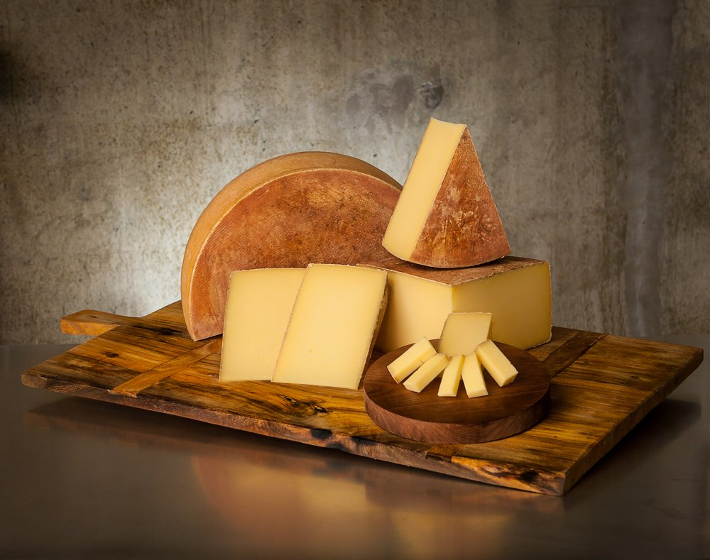
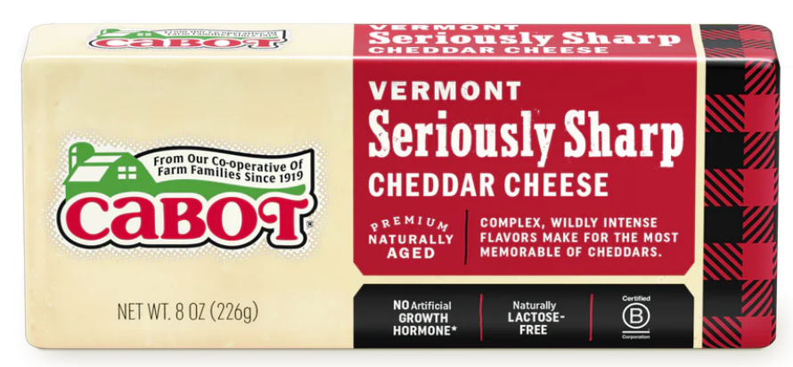

Vermont#
2 Year Extra Sharp Cheddar (Grafton Village)#

Style: Cheddar
Milk: Cow
Purchase location: Weaver Street
Purchase date: 02/20/22
Julie’s comments: Raw milk Vermont Cheddar. Off-white, crumbly, extra sharp chaddar that is snackable AF. Creamy when melted, with salty and mildly earthy later notes; a crowd pleaser. Great with chips & salsa, beans (?), also bourbon, maybe a white or fruitier wine. 3.01/5
Andrew’s comments: Sharp but not overbearing, & quite creamy as well. Medium texture, crumbly, “fudgey”. Note the most unique, but gotta like a nice cheddar. Does make me long for the High Plains Cheddar though. 3.2/5
Alpha Tolman (Jasper Hill Farm)#
{kind=link}
Style: Alpine
Milk: Cow
Purchase location: Whole Foods
Purchase date: 07/09/22
Julie’s comments: Yellowy tan firm cheese with a crusty rind. Chalky texture a bit, but still kinda smooth. Earthy, very woodsy flavor with a mild sharpness at end. Reminds me of comte. 2.23/5
Andrew’s comments: Flavor pretty mild, earthy, with some later funk that reminds me of fondue in a way. Chalky texture, not my favorite. Addendum: Not so mild actually, distinctly unlikeable taste (but not terrible). 1.3/5
Harbison Spruce Bark-Wrapped Bloomy Rind Cheese (Jasper Hill Farm)#

Style: Other
Milk: Cow
Purchase location: Carlinos
Purchase date: 09/17/22
Julie’s comments: Soft white/tan creamy cheese wrapped in leathery bark. Complex funky yet sweet/caramel flavor. Not salty, tastes rich & fattry, also mushroomy, barky. Designed to pair with Rasberry Mostarda jam/mustard combo, which is amazing (separate & together). Unique, hard to rate, subtle & tasty but not my usual style. I respect this cheese. 3.67/5
Andrew’s comments: Milky, buttery, salty taste, a bit sweet. Smells very funky but taste is surprisingly mild (note: other bites funkier). Interesting texture prile - light and gooey, almost slimy center, with chewy exterior. Very nice pairing with mustard raspberry jam. 4.0/5
Thanks to Barb & Rob Necarsulmer for this cheese!
Little Hosmer (Jasper Hill Farm)#
{kind=link}
Style: Brie-like
Milk: Cow
Purchase location: Jasper Hill Farm Giftbox
Purchase date: 11/22/22
Julie’s comments: Soft white/ivory ripe cheese with a soft center & bright white rind. Buttery, mild, salty, mildly herby, bright flavor. Maybe a hint of grass & melon? Brie-like, but a bit more mild & less gooey. Very tasty to me despite the Brie-ness 4.52/5
Andrew’s comments: Buttery, salty, a bit sweet, with a mild bit of funk coming in late. Rich Brie-like flavor but also pretty mild. Texture is slightly firmer than average Brie, with nice chewy rind gradient. I could go for slightly more funk but very tasty and snackable. 3.95/5
Thanks to Barb & Rob Necarsulmer for this cheese!
Spicy Jack (Cabot)#

Style: Pepper Jack
Milk: Cow
Purchase location: Unknown
Purchase date: 10/01/21
Julie’s comments: Decidedly not spicy! Except for like 3 random bites throughout the whole block. Those spicy bits were good, creamy jack. Disappointing, false advertising. 0.5/5
Andrew’s comments: Very disappointing, very unspicy, very little flavor. Made a decent quesodilla. 0.5/5
Valut 5 Cave-Aged Cheddar (Jasper Hill Farm)#

Style: Cheddar
Milk: Cow
Purchase location: Wegmans
Purchase date: 10/09/22
Julie’s comments: Tan brown hard cheese with rind that looks like brown salt and pepper. Nutty and woodsy and a teeny bit of funky flavor. Not very salty or buttery. I would not have guessed this was a Cheddar in any world. Definitely dries out. 1.86/5
Andrew’s comments: Light brown, slightly orange, pretty hard. Looks more like an aged Gouda than Cheddar. Nutty and pretty funky. Just a touch of Cheddar sharpness, and a bit of Gouda caramel notes. Weird funky aftertaste. After note: apparently this includes Alphine-style cultures, which gives it its not-that-cheddary taste. 1.9/5
Valut 5 Cave-Aged Cheddar (Jasper Hill Farm)#
Style: Cheddar
Milk: Cow
Purchase location: Jasper Hill Farm Giftbox
Purchase date: 11/22/22
Julie’s comments: Tan firm blocked cheese with a mottled bumpy light brown rind (looks like bread crust). Nutty & caramel flavors, not bery salty, a tiny bit of funk/bark at rind. Gummy/creamy texture, melts well & is delish melted. 1000x better than the last one of these we tried - very snackable now. 4.34/5
Andrew’s comments: Nutty, mildly sharp, a bit of caramel, not very salty. Kind of like a cross between Cheddar & Gouda & Comte. Semi hard, a bit gummy, a bit crumbly. Was better first few days, tends to dry out & get gummy. 3.4/5
Thanks to Barb & Rob Necarsulmer for this cheese!
Vermont Seriously Sharp White Cheddar (Cabot)#
{kind=link}
Style: Cheddar
Milk: Cow
Purchase location: Weaver Street
Purchase date: 04/15/22
Julie’s comments: This is not seriously sharp, unless seriously is less sharp than extra, which seems wrong. Mild cheddar, salty, chewy, kinda creamy. Fine/good on burger or sandwich. Meh alone. 2.0/5
Andrew’s comments: Semi-creamy, semi-sharp, medium texture. Pretty generic, though very snackable on chips, could eat a lot. 2.0/5
Willoughby (Jasper Hill Farm)#
{kind=link}
Style: Brie-like
Milk: Cow
Purchase location: Jasper Hill Farm Giftbox
Purchase date: 11/22/22
Julie’s comments: Soft ripened round cheese - yellowish gooey inner part with a tan/pinkinsh rind. Buttery as fuck - has a lot of Brie vibes, but darker in color & milder in flavor, not very salty. Excellent with cranberry sauce, on crackers, or jam. This is helping me on my journey to like Brie. 4.47/5
Andrew’s comments: Mmm tasty. Very buttery with Brie-like flavors, a bit mushroomy, & a mild funkiness. Super light & airy. Gooey texture & melts in mouth. Very thin rind compared to most Brie, not much chewiness. 4.3/5
Thanks to Barb & Rob Necarsulmer for this cheese!